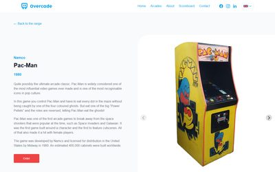
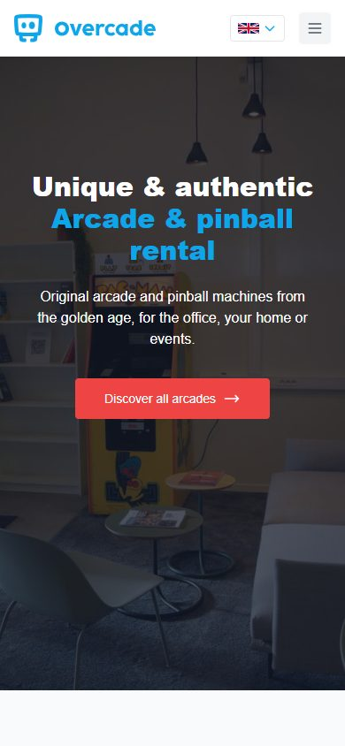
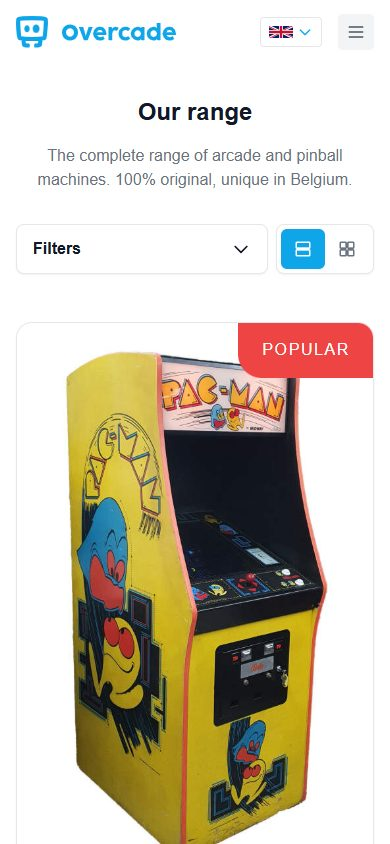

$ cd ~/projects/overcade
> Overcade_
Dec 2024 (Ongoing)
Overcade is my arcade and pinball rental business in Belgium. I collect and restore original machines, and companies and private customers can rent them for the office, at home or for events. This is the website I built for it: overcade.be.
The heart of the site is the catalogue. Every machine is a Markdown file with a few properties: category, number of players, force feedback, controls and genre. Those properties drive the filter sidebar, the specification list on each machine's page and a photo carousel. Filtering happens in the browser and is kept in the URL, so a filtered list can be shared. Interested visitors get to a contact page with my email, phone number and address. There's also a page about the online scoreboard where players can compare high scores, which is built on Agon.
The site is fully bilingual: Dutch at the root and English under /en/, built
by Jekyll with the jekyll-polyglot plugin. The templates exist only once and all text
lives in one data file per language, so the two versions can't drift apart in layout. A missing
translation falls back to Dutch, and every build lists what's still untranslated.
I chose Jekyll because the content hardly ever changes, so a static site is all I need. Styling is Tailwind CSS, using markup patterns from Hyper UI. Photos of the machines are resized to several widths at build time and lazy loaded, which keeps the pages light. Pushing to master runs a GitHub Actions workflow that builds the site and deploys it over FTPS.




